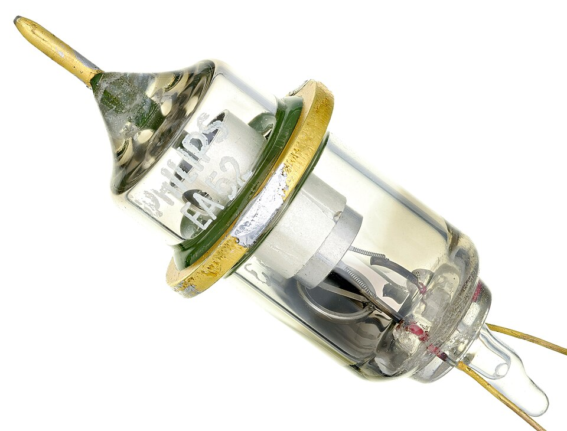
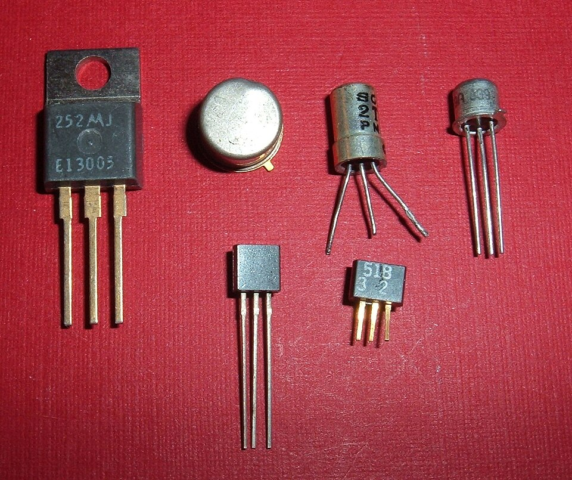

Atanasoff-Berry Computer (ABC)
1942- Developed by John Vincent Atanasoff.
- Atanasoff was a professor of mathematics and physics.
- He worked with graduate student Clifford Berry.
- ABC was designed to solve systems of linear equations.
- It was successfully tested in 1942.

ABC's Purpose
Linear equations- ABC was designed for solving mathematical equations.
- It could handle systems containing up to 29 equations.
- Such calculations were difficult to perform at the time.
The Electronic Era
Chapter- Computers began using electronic components.
- Major components included:
- Vacuum tubes
- Diodes
- Transistors
- Integrated circuits (IC)
- LSI
- VLSI
- ULSI
- These technologies made computers increasingly powerful and compact.



ENIAC
1942- ENIAC stands for Electronic Numerical Integrator and Computer.
- Developed in 1942 AD.
- It was an early electronic computer.
- It used thousands of electronic components.
- It occupied about 1,800 square feet.

John von Neumann and Stored Programs
Breakthrough- John von Neumann is often associated with the stored-program concept.
- He published a description of the concept.
- Earlier work on the idea existed in Eckert's notes.
- The breakthrough allowed computation steps to be represented electronically.

EDSAC
1949- EDSAC stands for Electronic Delay Storage Automatic Calculator.
- Developed in Britain.
- It was created at the University of Cambridge.
- It was an early stored-program electronic computer.
- Its first calculation was performed on 6 May 1949.

Popular First-Generation Computers
The machines- ABC — Atanasoff-Berry Computer
- ENIAC — Electronic Numerical Integrator and Computer
- EDVAC — Electronic Discrete Variable Automatic Computer
- UNIVAC I — Universal Automatic Computer
- IBM-701
- IBM-650
- Mark-I, II, III